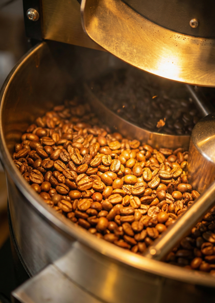
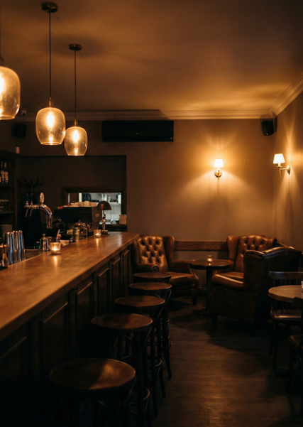
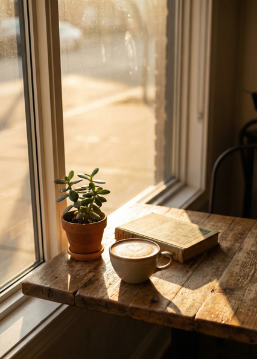

Freshly Roasted in Omotesando
自家焙煎の豊かな香りと、深みのある味わい。
日常を忘れさせる温かな空間で、あなただけの一杯をお淹れします。

表参道の裏路地にひっそりと佇む「KOHARU COFFEE ROASTERS」。扉を開けると、そこは都会の喧騒とは無縁の静かな空間が広がります。
私たちが大切にしているのは、豆本来の個性を引き出すこと。店内の焙煎機で丁寧にローストし、最高の香りと甘みを追求しています。
静謐な空間と、美しい瞬間


KOHARU COFFEE ROASTERS
〒107-0062
東京都港区南青山X-X-X
KOHARUビル B1F
11:00 - 22:00 (L.O. 21:30)
※定休日：火曜日